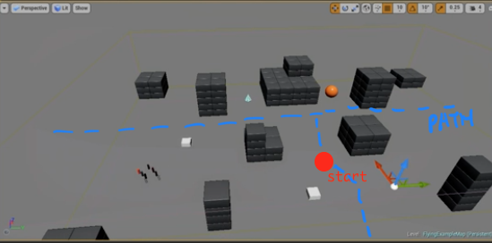
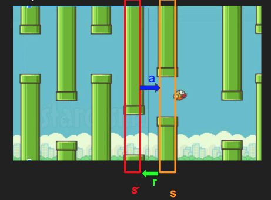
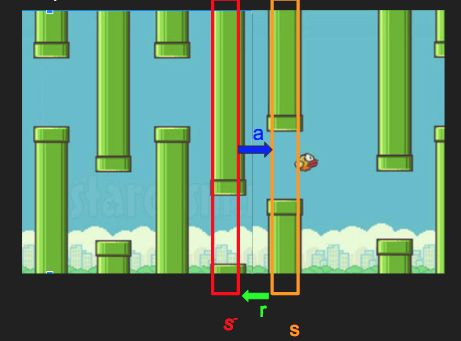
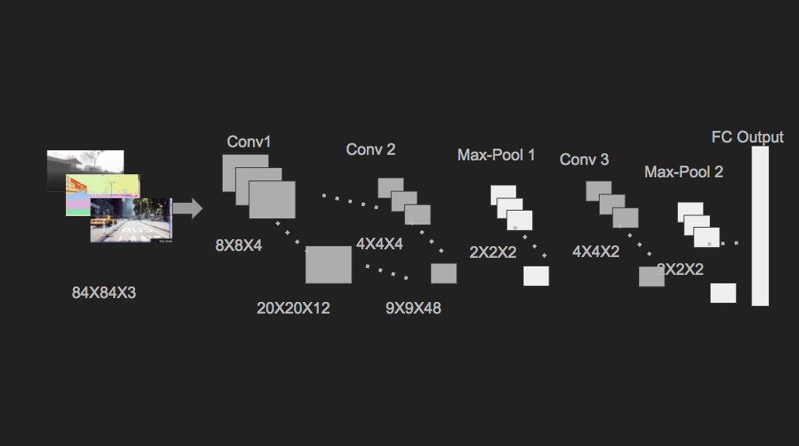
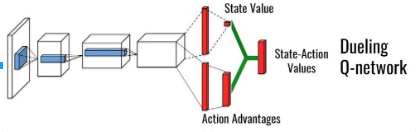

DQN Obstacle Avoiding in AirSim
Individual Work of Jianyuan (Jet) Yu
[3-Min Slides]
[Proposal]
[Codes]
Final Project, EE5984 Robot Motion Control Fall18, Virgina Tech
Overview
- Car start somewhere surrounded by obstacle, plan to get out without collide eventaully by Reinforcement Learning
- Classic methods are most model-based, or constraint by the computation. e.g. Markov Decision Process(MDP) cost Gigabyte memory for the transition matrix.
- Implement Deep Q Network(DQN), based on Tensorflow + AirSim, evaluatad on Unreal Engine Edior
Related Work
-
Earlier work [1] reveal Reinforcement Learning can assist robot to avoid the obstacles.
Nowadays. the paper [2] test DQN in ROS to explore a corridor environment with only RGB-D sensor,
and shows DQN can pass new environment after pre-training.
While [3] shown Double-DQN DDQN can better learn the obstacle under Gazebo or real world. Meanwhile,
some work [4] has test the feasibility learning to navigate with AirSim in Unreal Engine scenery.
Problem Formulation
Assumptions

- Environment - Several Abstract Cubes
- Action - Fixed throttle(speed), steering direction (Left , Half Left, Forward ,Half Right, Right), no back, no brake
- State - Image of car's front-view
- Reward - -100 collide, +1 moving away, +100 surpass, the near-far is measured by the sensor about distance bettween current location and start location.
- Restart after collide
- Predict rather than long-range sense & real-time action
Predict - Learning from history
 

-
Currently work mainly focus on long-range sensing and immediate in-time aciton,
e.g. Telsa Autopilot, which is resource consuming and not flexiable.
Reactive-and-action require the agent to have full and perfect sensing, as well as compute out the action in a short time.
Once the agent is not highly equipped, there is a obvious time gap between sensing and action, and it has to slow down or pause to make current sensing.
Luckily, the DQN make actions based on previous state, or a bunch of states, and then do the sensing.
Moreover, DQN can even learn base on part of observation (partial DQN), or make observation over a period rather than each time.
Hence it is more practical and more reliable.
The agent makes action based on previous state, and gets immediate reward (collide or not) and update the state, and these four variable together make up the input of DQN.
Approach
Deep Q Network
- we adapt open-source DQN as starter, while focus on "translate" images and car motion into the <S_, A, R, S>tuple.
- DQN output a scalar value, that later "translate" into car motion.

Tools and Environment Setup
- Tensorflow is chosen due to flexiability and popularity, keras is over simplified that could missing some information, CNTK is abandoned cause still young and buggy.
- AirSim help to connect the scale-value and car in Simulator.
- Unreal Engine is adopt to test with the default case the Blocks, simply drag-n-place and adjust location or size could make up a obstacle. More easier than Gazebo or Unity.
Image Processing
- Apply CNN to process images
- INPUT: 3 images from front-view
- OUTPUT: 512-bit identicial vector
- Strutures: 7-layer Convolutional & Max Pool layer

Performance Evaluation
Offline training + Online Evaluation
- one case of success after 1,000 offline episode of training, cost approximate 4 hours.
- Car make frequent turns at beginning stage to explore as different states, and still explore a little bit even it has already find right path at later.
- Robust to parameter settings.
- Car Speed matters, too fast easily collides, too slow could learn but slow in evaluation.
Cost and Reward

- Decresing Cost
- Incresing Reward
Future Work
- DDQN: it claim to converge faster and highly adopt, the idea behind is is similiar to increment from Dijkstra to A*, adding up the advantage function value to the Q value.
- Setup destination instead of anchor: we set anchor to measure the distance gone so far, however set the destination is more realistic
- Online learning/ star over on-site: online learning could be applied to real life robot, which start over on-site, once we figure how to get out of stuck with more precise motion control.
- Scale up actions: espeicially multi-rate speed.

References
Papers
- [1]. Michels, Jeff, Ashutosh Saxena, and Andrew Y. Ng. "High speed obstacle avoidance using monocular vision and reinforcement learning." Proceedings of the 22nd international conference on Machine learning. ACM, 2005.
- [2]. Lei, Tai, and Liu Ming. "A robot exploration strategy based on q-learning network." Real-time Computing and Robotics (RCAR), IEEE International Conference on. IEEE, 2016.
- [3]. Xie, Linhai, et al. "Towards monocular vision based obstacle avoidance through deep reinforcement learning." arXiv preprint arXiv:1706.09829 (2017).
- [4]. Wu, Tung-Cheng, et al. "Navigating Assistance System for Quadcopter with Deep Reinforcement Learning." arXiv preprint arXiv:1811.04584 (2018).
Blogs
Github Open Source
- [1]. AirSim Python Client Car Tutorial Codes , by Microsoft
- [2]. The Autonomous Driving Cookbook , by Microsoft
- [3]. Object Tracing with UAV in AirSim Environment , COMP90055 computing project in University of Melbourne
- [4]. Obstacle Avoidance using DDQN, npd15393
- [5]. Using Deep Q-Network to Learn How To Play Flappy Bird, by Yenchen Lin
- [6]. DQN with Tensorflow, by Morvan Zhou